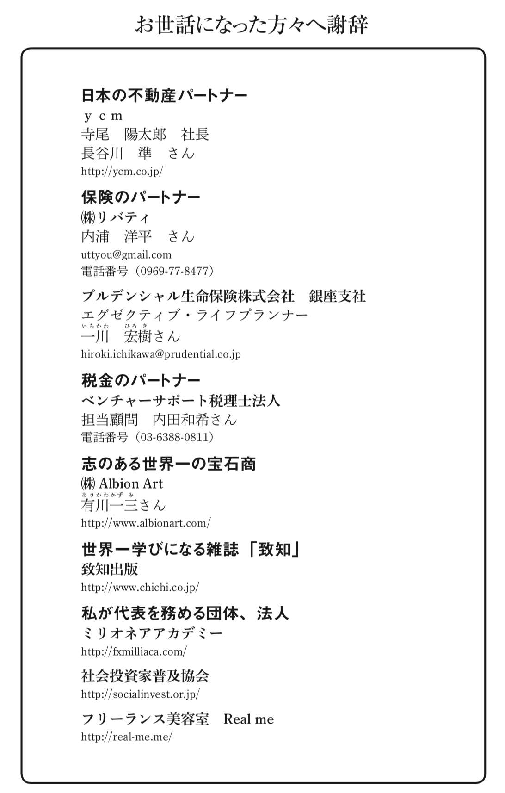
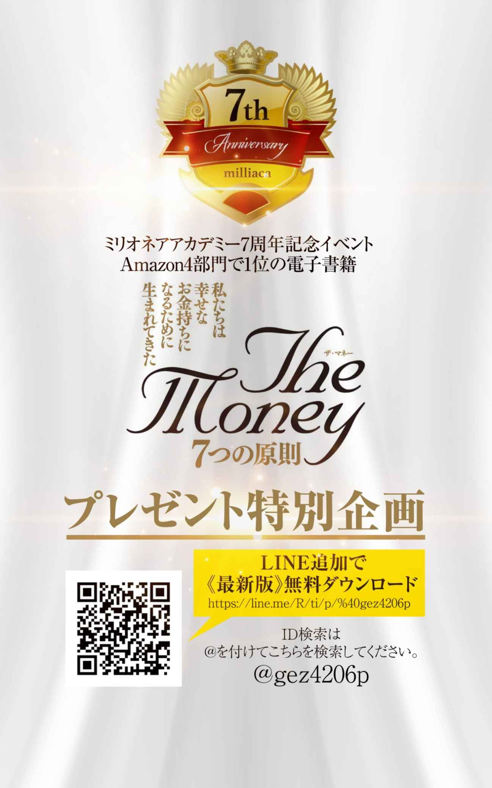
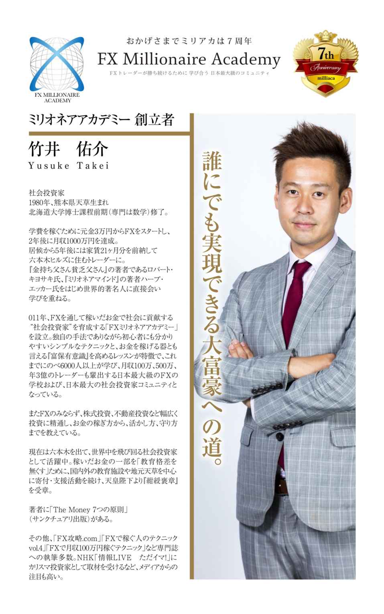

| ザ・マネー 7つの原則 第7章 真のお金持ちの 考え方 | |
| 竹井 佑介 | |
| NEXT LEVEL (2018) | |
第７原則 真のお金持ちの考え方
７−１０ 全て身の周りに起きていることは 本当の自分を取り戻すための 神様からのメッセージ
７−１１ メメントモリ 人はやったことと同様に、やらなかったことで人生は決まる
ｃｏｌｕｍｎ ６ ７０億人全員の幸せの達成につながるマザー・テレサ
これまで私の経験をもとに様々なお話をさせて頂きましたが、この章ではいよいよまとめのお話となります。私が成長していく過程において何が変わっていったのか。それは考え方とそれに伴う習慣です。そして習慣が変わっていったことによって世代を超えて尊敬する方々とが合うようになっていきました。そしてそこから様々な人たちご紹介いだくようになり、その輪が広がっていきました。当然のことながら尊敬する方たちの周りにはまた尊敬する方たちがいます。つまり類は友を呼ぶということです。ビジネスにとって良い話も悪い話も基本的に全て人伝えできます。
素晴らしい方からは素晴らしい話しかきませんし、ロクでも無い方からはやはりロクでもない話しかきません。後者はよく「良い話がある」と持ち掛けてきますがほとんどがその方にとって「良い話」であって、こちら側にとってはちっとも良くないどころか悲劇的な話であることがほとんどです。その方が人を大事にするかどうかは周りの仲間たちを観れば大体分かります。昔からの地元の仲間を大切にしているか、家族を大切にしているか、仲間たちが互いに敬意を払い合っているかなど、しっかりとチェックする必要があります。
良い仲間を作りたければあなたが良い人にまずならなければなりません。では、早速お話していきたいと思います。
トレードのところでもお話しましたが、私たちは現在を含めた過去の歴史からしか未来を読むことは出来ません。そして過去の歴史を調べると人は同じことを繰り返してきたことが分かります。その意味で「人は歴史から学ばない」ということについてもお話してきました。
ただ多くの人は学ばないからこそ学んだ人にとっては大変なチャンスとなります。そこでここでは読者の皆様に最低限目を通しておいて欲しい古典についてお伝えしたいと思います。
１つ目は『論語』です。孔子と弟子たちとの言行録になります。孔子は紀元前５５１年に生まれ紀元前４７９年３月９日に亡くなったと言われているため２４００年以上も残って現代に伝えられている数少ない本です。実践的であり非常に分かりやすく子供でも理解できるものです。
最近では安岡正篤氏のお孫さんの安岡正子氏が子供向けの論語の本を書かれ素読も勧められており、素晴らしいと思います。明治時代の教育勅語など古典の素晴らしいものはそのまま子供の頃から丸暗記されると良いと思います。そして成長を重ねるに連れ昔丸暗記していたものの深い意味が理解されるようになってくると、それは悟りにも似た静かな静寂が心に生まれることになります。
私も実際、子供に実践していきたいと考えています。江戸時代の三大私塾の一つである大分県の日田にある「教育とは人間社会における最大の善行である」をモットーとした広瀬淡窓（ひろせたんそう）の咸宜園（かぎえん）の教育プランは現代人にとってとても良いかと思います。そこで小さい頃に論語を学び、最後に学ぶのが次に紹介する『伝習録』などを含む陽明学です。
二つ目の『陽明学』はあまり馴染みの無い方も多いかもしれませんが、私は孔子の思想の完成系だと考えています。創設者の王陽明は１４７２年９月３０日に生まれ１５２９年１１月２９日に亡くなった、中国の明代の儒学者であり思想家であり高級官僚であり武将でもある非常に多才で伝説的な功績を残されている方です。そのため陽明学は５００年間残ってきています。
王陽明は朱子学の読書などで知識を増やさないと真理に到達できないとする性即理を批判し、人の中に真理を求め、１つは全てに通じるという心即理を唱えました。まさに実践型の儒学であるのが陽明学です。明治維新志士たちの思想的支柱であった２９歳で亡くなった吉田松陰はまさに陽明学者でした。
３つ目は内村鑑三氏の『代表的日本人』です。西郷隆盛、上杉鷹山、二宮尊徳、中江藤樹、日蓮の五人をあげ、彼らが成し遂げた功績と何よりその人物たちの人間性に焦点が当ててあります。我々がどういう日本人としての誇りを持てば良いのかを教えてくれます。
４つ目は『聖書』です。特に新約聖書から読み進められるのが良いかもしれません。欧米の本はこの聖書の教養がベースになっているものがほとんどで理解を深めるためには必須です。何よりこの内容は世界一読まれている本というだけあって非常に何度読んでも人が書いたものとはとても思えない、まさに神様から預かった言葉、預言書なのではないでしょうか。
他にも紹介したい本はありすぎて余りあるほどですが、意識的に現代のベストセラーだけではなく一度時間をしっかりと取って古典から学ぶ機会を作られたら良いかと思います。私も毎月１回福岡に伺って、橘一徳先生から陽明学など様々な古典を学ぶ機会を頂いています。
それら古典が現代でも読み継がれているというのは歴史の荒波にもびくともしない普遍の真理だからです。折角こういった本が未だに読めるというのに、読んでいないということは現代人にとってどれほどの宝の持ち腐れでしょう。もちろん内容が難しくて理解出来ないということもあるでしょうから、私も先生をお呼びして東京でも勉強会を定期的に開き読者の皆様とも一緒に学べる機会を提供したいと考えています。
一度決めたこと、ルール、規律は徹底的にやり抜き、守り抜くという意味です。この本の中でも何度もお伝えしてきたとおりです。一度やると決めたことを本当はやり抜くべきだと分かっているのに、ストレスや負荷がかかったことが原因で諦めてしまうと、次も同時ストレスレベルで止めてしまいます。
つまり一生そのレベルから抜け出すことが出来ず成長することが出来ません。「絶対に無理だ！」と感じた時に我々が行うのは諦めることではなくどうしたら出来るかを考えることです。そしてほとんどの出来ない原因はあなた１人でやろうとすること、つまり一馬力発想が根っこにあります。
何かを成し遂げようと決め、規律をつくり一旦進みだしたら決してその動きを止めないことです。それはたとえ将来夢に描いていることとはかけ離れていることだとしてもチャンスの扉は今やっていることの先に必ずあるからです。これが本当にONENESSを理解している人の行動です。たとえうまくいかなかったとしても一所懸命にそれに取り組んでいたのであれば、必ず次につながる出来事が起こります。嫌なことでも一度決めたことはやり通すことによって精神レベル、忍耐レベルはどんどん上がっていきます。私も様々な仕事やアルバイトを通して経験させて頂きましたが、某ファーストフード店で料理部門の仕事をしたいと思って入ったところ実際は掃除の仕事を与えられましたが、最初は「え〜！」と一瞬は思ったりはするものの結局は与えられた仕事を求められる以上にやってやろうという気概で行っていました。
そして気づいたことはどんな仕事にも面白味があり、学ぶべきことがあるということです。また理不尽な環境であればあるほど一旦やると決めたことを腐らずに一所懸命やっているとそれを観てくださっている方が必ずと言っていいほどいて、重用してくれるようになります。
つまりその精神忍耐レベルに見合った仕事が天から与えられ、それをクリアすると次のレベルの扉が開かれるようにこの世は出来ているのではないかと思います。
お部屋は基本的にあなたが１番時間を過ごす場所です。そのためあなたの心の状態がそのまま投影されているものです。心が整理されていない方は部屋も無秩序に使わないガラクタもそのまま無造作に置いてあったり汚れがそのままになっていたり、逆に神経質すぎる方は異様なほどにものがなくほこり一つ落ちておらず潔癖で人を入れることすら拒むような方もおられます。もちろんどれが良い悪いというものでもないですが、大事なのはあなたが求めている結果に相応しいお部屋の状態になっているのかということです。
つまり、ただ整理整頓され見た目に綺麗にしていれば良いという訳でもありません。私がこれまで観てきた大富豪たちのお部屋はデザイナーやメイドさんがいることもあり基本的にとても整理整頓され色味や家具なども統一感があり非常に落ち着ける空間になっていました。外の景色も自分の部屋の一部のようになり開放感もありゆったりとした時間が過ごせるようにしてあるところがほとんどでした。
それとは逆のパターンもありました。特に一部の研究者タイプの方々や編集者などのオフィスは雑然としているところも多々見受けられました。数学の世界では解析系の方は特にそうで、代数系の方はとても綺麗なお部屋が多い印象がありました。ただご自宅はお手伝いさんや奥様などのおかげか綺麗に整理整頓されている方が多かったのは事実です。私の場合は集中的にやる際にオフィスは資料や書籍だらけで山のようになってしまいますが、あくまで一時的で終わったら一気に古本屋に引き取りに来てもらったりしてモノをすっきりさせてしまいますので一部研究者タイプなのかもしれません。逆に言えば私の富保有意識をアップする余地はここにあるのかと思います。
このように夢を叶え成功している人たちの部屋のタイプは様々ではありますが、ことお金持ちというところに絞ってみますとお手伝いさんがほとんどいらっしゃった為綺麗で整理整頓されていました。ただこの整理整頓には２種類あります。
よく巷に出ている整理整頓の本を拝見するといかにモノを捨てて、部屋をスッキリさせるかということを強く主張しているものが多く見受けられますが他にも方法があります。
ズバリ！ 部屋を広くしてしまうという方法です。１０代、２０代、３０代の若い方、そしてこの本の読者の皆様にはモノを捨てるよりも、そのモノをそのまま置いていても大丈夫なもっと広いところに引っ越してやる！ といった気概を是非持って欲しいと思います。オフィスや家が手狭になってきたら、より広いところに引っ越すという発想です。この発想の方が金銭的に豊かになっていくのではないでしょうか。
そしてお部屋に関してもうひとつ大事なことは目に見えない掃除、整理整頓というものがあります。もちろんお部屋を綺麗に整理することであなたの心も整理されていきます。しかしながら目に見えるところばかりではなくお部屋やあらゆる場所には気があります。世の中にパワースポットがある一方で、自殺の名所もあります。つまりそこに溜まっている気、流れている気というものがあるということです。その意味で引っ越しして来られた際には前の人の気がその部屋には最初残っています。そのためまず引っ越してすぐに行って欲しいのは、スペースクリアリングです。あなたのお部屋はあなたの夢を叶えるためのお部屋にしていかなければなりません。カレンさん（Karen Kingston）のスペースクリアリング関連の本に目を通しておかれると良いかと思います。特にオフィスなどはそうですが、前にお住まいの方が栄転されたかどうかも、私は常に引っ越しの際には確認するようにしています。クリアリングするとはいえ、前の方が栄転されたようなお部屋はゲンがいいからです。
また風水などを活用してお部屋を構築していかれるのも良いかと思います。大事なのはあなたかが夢を叶えるためのこだわりのあるお部屋にするということです。あなたがそこに住むことで自信がみなぎるような内装と気の流れのお部屋にすることです。
そして心地よい場所にしていき、家に帰ることでとても癒されかつ自信が湧いてきます。
また最後に掃除と言えばよく本に出ているのがトイレ掃除に関してかと思います。そして掃除と言えばイエローハットの創業者でＮＰＯ法人日本を美しくする会の相談役でもある鍵山秀三郎氏は最も有名なのではないでしょうか。
（http://www.nipponーshacho.com/interview/in_yellowhat/）
掃除を通して人の心を整えていかれるというこの発想は素晴らしいですし、私も実際、公衆トイレで汚いところをみつけたり、路上にごみが落ちているのを見つけたりした時にはその場で掃除し、ごみは拾ってごみ箱に入れます。ヨガの教えにShaucha（サウチャ）というものがありますがこれは「清潔を保ちなさい」という意味です。
その意味ではトイレを綺麗に保つことは基本です。その会社や飲食店が良いところかどうかはトイレが綺麗に保たれているかどうかで分かります。自宅も同じです。
そして掃除とはその場をパワースポットにすることです。神社でお参りするときに手を洗い口をすすぐことで身を清め神様と向かい合いますが、そのような気持ちで自分と家族の夢を叶える場所として自宅を掃除によって清め扱っていくことが大切なことです。
よくお金持ちは長財布を持っている、満月に向かって財布をフリフリする、高級な財布を持っているなど、ほぼ都市伝説のようなことが実 しやかに語られていますが、私が出会ってきたお金持ちの方々の印象としてはそういった共通点はありません。
二つ折りの財布やマネークリップを使っている方もいらっしゃいますし、カードしか持ち歩いている人しかいなかったり、そもそもご自身でお金を持ち歩いていなかったりとバラバラです。
ただ共通点をあげるとすれば皆、財布は整理整頓されているということです。領収書と財布が一緒に入っている方は結構見ますが、お金持ちの方でそういった方はほぼ皆無です。
私の場合も絶対に領収書は財布に入れることはありません。領収書はお金が出ていったことが印字されています。そのため領収書はお金が出ていくエネルギーのものというイメージが私の中にあります。それを財布に入れることはゲンが悪いと感じます。そのためバッグの中でも分けたところに領収書は入れるように、決して財布と触れないようにしています。
財布を含めモノをしっかりと大事に扱うことが大切なことではないでしょうか。そして何よりお金を大事にします。必ずそんなに小さいお金でもそれを出した以上の金銭的、精神的リターンがあるものでなければ決してお金を出したりはしません。そのため何億というお金をポーンと使うことがあれば、数百円を値切るということもあります。周りからみると奇異に見られがちですが、結局、見合った額以上は決して出さないからです。
財布の使い方もそうですが、それ以上にお金の使い方をしっかりと学んでいくことがとても大切です。
一般的によく言われるのはGive and Take（ギブアンドテイク）、もしくはWinーWin（ウィンウィン）もよく聞く言葉ですね。
与えたらその分の見返りを求めるという考え方ですが、これまで本を読み進めて来て頂いた方にとっては最早この考え方に違和感があるかと思います。何か見返りを求めて行動をするという行為はとても富保有意識が低く、キツイ言い方をしてしまえば浅ましいと言えます。そうではなく自分が提供できることを「好き」で徹底的に提供し貢献することです。
大金持ち、大富豪の人たちとの仕事ぶりをみたり、最近ではフィリピンで一緒に仕事させたりしてもらうようになった大富豪たちは皆、とにかく与えようとします。自分自身が儲けるよりも私のような若い世代を育てようとしてくれて、とにかく良い条件で仕事をジョイントしてくれることが多いです。つまりそこまでの信頼感を得られることがとても大切なことであるということです。彼らの考え方は教え育てようとするつまり「Give and Give（ギブアンドギブ）」を徹底しているように思います。その根底には自分自身が満たされているということがありますし、その幸せをお裾分け、つまり次世代を育てることに力を注いで下さろうとしています。そして私たちもその期待に応えようと必死で努力、精進し喰らいついていきます。
そして私自身も一部の方にコンサルやコーチングなどさせて頂いていますが、私が仕事をする時にいつも心がけているモットーがあります。それは「Give and Forget」です。与えてそれに見返りを求めず、自分が与えられることを最大限与えさせて頂き、またもっと与えたいからより努力し自分のレベルを上げていくということです。
与えて忘れてしまえば、見返りも求めないため、相手の反応が自分の期待していたものと違ってイライラすることもなくなります。むしろ反省点として自分の行動を改善させていくことになります。他人と過去は変えられません。変えられるのは自分と未来です。自分が変われば他人も変わって見え、過去の解釈の仕方も変わります。その自分を高め続けるキーワードが「Give and Forget」です。
おかげさまとは「お陰様」と書きます。この陰は誰の陰を指すかと言いますと、神様や仏様といった偉大な存在の陰で、その庇護、加護を受ける意味として使われてきました。
そしてどんな人の中にも身体と心と魂がありますが、この魂とは全ての生きとし生けるもの全ての中にあり、全てとつながっているとガの教え(Ishwara pranidhana）の中にもあります。この魂こそが人の備える神性であり、我々は生きているだけでお陰様であり、また人に親切にしてもらい心が癒され、助けて協力してもらうことでより大きな力を発揮することが出来るのもまさにお陰様です。
生きとし生けるものが関わっている以上そこには神様などの偉大な存在が魂としてあり、その力のつながりを意識することで、全ての出来事、出会いが必然であると心から理解出来るようになり、そこに感謝が生まれ全てはお陰様ということになります。
このお陰様のことを理解し体感出来るようになると、人生が導かれているかのような感覚に陥るようになります。その感覚になると全ての出来事が自分自身が今世で成すべきことを示してくれているかのうように感じます。そしてどんなにその時は嫌だと感じていたことも後々あれがあったお陰で今の自分があるということに気付けるようになっていきますし、その気付けるスピードはどんどん上がっていきます。
となるとどんな出来事も自分にとってプラスにとらえられるようになるため、「私は何て強運なんだ」という意識になっていきます。そしてその強運に感謝するようになります。すると何が起こっても感謝するようになるため、感謝に溢れ、そしてその幸せのお裾分けを周りの仲間たちにも行うようになります。つまり自分にもっと出来ることは無いだろうかと、愛を持って仲間たちをサポートしていくようになります。
そんな人は周りからどう映るでしょうか？ 当然のことながらとても魅力的な人に映り、皆があなたに惹かれるようになります。数年前に必要なものは思うことで集まってくるという「引き寄せの法則」が流行りましたが、「惹き寄せの法則」と言っても良いのかもしれません。ほとんどのチャンスはあなたに惹かれた人が運び込んでくるのですから。
そして大富豪の方々は総じて本当に魅力的な方が多く、一見普通のおじちゃんに見える方も独特の魅力と眼光の優しさと鋭さが兼ね備えられており、その立ち居振る舞いや会話から一気に惹き寄せられてしまいます。
私たちは子供の頃から勉強、スポーツや受験などで競い合うことを強いられてきました。また会社に入っても売上を個人間で競争し合ったり、課されたノルマをこなしたり、会社間で競争したりと「勝ち負け」の世界が繰り広げられているように見えます。
しかしながら本当は競争ではなく共創するといった方が正確なのかもしれません。
先ほどお伝えしました通り、私たちの存在が１つの魂を分け与えられつながって存在している、日本の言葉で言うと分霊 である以上、個々の身体と心では別々の存在として競争しながらも、魂の部分では互いの立場でより高みを目指すために違う立場から共に創造していることになるのではないでしょうか。
この意識になると世界中の人たちを友達、仲間と認識出来るようになるため、まさに最強の仲間意識と言えるのではないでしょうか。
有名な『ソクラテスの弁明』という本の中にあるお話です。
古代ギリシャの哲学者ソクラテス（紀元前４６９年頃 - 紀元前３９９年４月２７日）の弟子カイレフォンが神様から言葉を託される場所であるデルフォイへ行き「ソクラテスより知恵ある人はいない」という神託を得ました。
ソクラテスは不審に思いこれが間違いであることを証明しようと、賢者と評判のある様々な職種の人物を訪れました。その結果、彼らは専門的な知識に関しては確かにソクラテスより知っていましたが、本当に大切な「美しさや善、徳」については知ったかぶりをしていました。
彼らに対してソクラテスは「美しさや善、徳」についてはまだまだ自分は全てを理解しておらず知らないということを自覚していました。
こうしてソクラテスは「美しさや善、徳」について自分が無知であることを知っているという点で自分は最も賢い者であると、この神託を理解したというお話で、ソクラテスの「無知の知」として知られています。「自分は何でも知っている」と思うと、あなたから謙虚さが失われ傲慢さが顔を出します。傲慢になると人の話を聴かなくなり、そして人を通して得られる神様のメッセージが聴こえなくなってしまいます。パナソニックの創業者、松下幸之助氏も工場などでどんな従業員のお話にも耳を傾けられていたのは有名なお話です。
自分自身の「無知の知」を自覚し、どんな方からも出来事からも学べるようにしておくことがとても大切です。最も賢い方とはどんな方からも、どんな出来事からもありとあらゆるものから学ぶことが出来る人です。
だからこそ身の回りに起きる全てがチャンスとなり、大成功する糸口を見つけるきっかけとなります。
これまで全ての出会う人、出来事には意味があり必然的に起こっているというお話をしてきました。そしてこの必然性とは魂、分霊が全ての生きとし生けるものがつながっているからこそ言えることでした。
自分とは「自」を「分」けると書きますが、まさにこの「自」にあたるのが皆共通の「魂」と言えるのでしょう。より詳しく見るために聖書に次のような一節があります。
創世記１章２６、２７節
「人が、神のかたちとして、神に似せて造られた」
ヨハネによる福音書４章２４節
「神は霊である」
と書かれています。そのため人が似ているのは身体というよりは霊の部分であり、それを分けたのが分霊としてのあなたとなるということを示しています。これはあなたの一部分に神様が在る、宿っていることを示しています。
その一方で私たちはそれどれ異なる身体と心を神様の魂、分霊の器として与えられ、生まれてからそれぞれのやり方で育んできています。身体を粗末に扱いすぎ負担がかかってしまっている場合には病気や身体の不調という形でお知らせしてくれます。そしてあなたが叶えるべき夢はドキドキやワクワクの形で心を通して教えてくれています。
そのサインにシンプルに従っていくことで、あなたは本来の神性を伴った自分になり、使命を果たせるようになっていくのです。
メメントモリ（memento mori）はラテン語で「自分が必ず死ぬことを忘れるな」という意味です。私はこの言葉を知り常に意識するようになったことで生き方が大きく変わっていきました。
まずこの言葉の元々の意味であった「今を楽しめ！」ということです。私の場合は今世で「竹井佑介」という人生を構築し生きているわけですが、この「私」としての人生はたった一度っきりしかありません。そして肉体を持っている今しか出来ないこと、肉体を失ってからは出来ないことがたくさんあります。そのため必ず死ぬのであれば、その死ぬ際にしておけばよかったと後悔してしまうようなことをあらかじめ想い起こしておくと良いでしょう。
精一杯生きることで見えてくる世界があります。あなたが今使っている身体は決してあなたが作ったものではありません。お父さんとお母さんの２人の出会いによって形作られ、また後両親それぞれにもご両親、あなたにとっての４人のおじいちゃん、おばあちゃんがいらっしゃいます。そしてそのおじいちゃん、おばあちゃんにもそれぞれご両親がいらっしゃいます。このひとつひとつのかけがえのない出会いがひとつでも違っていたら、あなたは存在しません。
１０代遡るだけであなたの命に関わっている人々の数は１０２４人にもなり、２０代遡ると１００万人を超え、２７代遡ると１億人を超えほぼ現在の日本と同じ人々の数となります。そして３０代で１０億人を超えたったの３３代遡ることで８０億人を超え、何と地球人口を超えてくるのです。１世代を多く見積もって３０年だとしても３３代はたった千年程度の時間となります。そう考えると地球誕生からの４６億年の歴史、宇宙誕生からの１３７億年の年月までを考えると、とてつもない考えられないほどの奇跡的な確率の中であなたという存在が誕生したことになります。
また人生を８０年で考えるこれを秒数に直すと約２５億秒になります。１秒に１人ずつお会いしたとしても今の地球上に住む人々全員にお会いすることは不可能です。つまり１３７億年の歴史の中の奇跡的な確率であなたはその肉体を持ち、奇跡的な確率でこの同時時代のタイミングに生まれ、そしてまた奇跡的な確率で私はあなたとこの本を通してつながりを持つことが出来たのです。このように考えると全て起きていること、出会いすべてに意味があるように思えてきてなりません。私が以前メメントモリを意識し死を想った時、はじめは「～しておけばよかった」という後悔の念を抱きながら最後、仲間たちに見守られながら息を引き取っていました。そしてその後悔していた内容をこの身体を使って体現していこうと考えていました。
だからこそ必死の精神で使命感を持ち、自分の命を多くの人たちのために使って頂けるようにと、がむしゃらに努力し邁進してきました。他人の命は大事にしつつも、成功していく課程では「自分の命を粗末に扱うこと」、リスクをより大きなリターンを狙いどんどん挑戦していくことの大事さも気付くことが出来ました。
この考えは今までの人生を振り返った時にとても大切なものであったことは事実です。しかしながらこの本を書きながらあらためてメメントモリした時、見える景色は少し異なるものでした。
それは決して後悔ではなく「感謝」の念でした。本当に多くの人たちとの奇跡的な出会いを通じて、自分自身という存在が生きることが出来たということです。この私の死を悼んでくれている人たちのつながりには私を含めそれぞれご先祖様から頂いた奇跡的なつながりがあり、そのベースにはもちろん地球が誕生してくれた奇跡、宇宙が誕生してくれた奇跡があります。これらをひとつひとつ思うともうそこには感謝しかなく、言葉ではなく涙がありました。私たちはやったことだけではなくやらなかったことでも人生は構築されていきます。この生きるという行為はそのメメントモリによって気付くことが出来た感謝を、どのようにして命を持っている時に身体を持っている時に表現していくのかとういことではないでしょうか。そう思えた時、あなたの考え方、行動というものは神様から頂いた使命を全うする尊い本来のあなたとしての行為となっていくことでしょう。
人生は本当に短い時間しか与えられていません。だからこそあなたが出来ることは精一杯やりきることも大切ですし、あなたが亡くなったあと先人から受け取った意志のバトンをあなたから次の世代の方々にバトンタッチし繋いでいくことがとても大切なことです。
あなたが頂いた身体、心をしっかりとメンテナンスし、少しでも皆のためになるよう命を使って頂けるよう過去から未来まで含めた全ての生きとし生けるものに対して恩返しの人生を共に生きていきましょう。
マザー・テレサを知らないという方は我々の時代においてはそうはいないではないでしょうか。
彼女の次の言葉は生きるとは何かを教えてくれます。それを知っているか知らないかでどれほど人生が変わることでしょう。しっかりとかみしめて頂ければと思います。
「人は不合理、非論理、利己的です。
気にすることなく、人を愛しなさい。
あなたが善を行うと、利己的な目的でそれをしたと言われるでしょう。
気にすることなく、善を行いなさい。
よく目的を達しようとするとき、邪魔立てする人に出会うでしょう。
気にすることなく、やり遂げなさい。
善い行いをしても、おそらく次の日には忘れられるでしょう。
気にすることなく善を行い続けなさい。
あなたの正直さと誠実さとが、あなたを傷つけるでしょう。
気にすることなく正直で誠実であり続けなさい。
助けた相手から恩知らずの仕打ちを受けるでしょう。
気にすることなく助け続けなさい。
あなたの中の最良のものを世に与え続けなさい。
けり返されるかもしれません。
気にすることなく、最良のものを与え続けなさい。
あなたは、あなたであればいい。」
この言葉はまさに私たちに生きるとは何かを教えてくれるものです。
そしてもうひとつ紹介させてください。
私たちはこの世で大きなことはできません。小さなことを、大きな愛でするだけです。
あなたはこのマザー・テレサの言葉から何を感じましたでしょうか。
生きるということはあなたが出来ることを最大限の愛をもって行うということです。不幸とは相手にあなたが思う行動を求め、相手の反応があなたの思い通りにはならないことを「不快」に思うことです。つまり自分勝手なのです。
ただひたすら相手の評価を求めることなく、あなたの最大限の愛を伴った行動自体を楽しみ喜ぶことが出来るようになること、それが幸せなのではないでしょうか。
その意味で彼女の行動や言動は７０億人全員の幸せの達成につながるものなのでしょう。彼女の意思は決して絶やしてはなりません。
あとがき
これで『The Money ７つの原則』の第１原則から第７原則まで全てお伝えいたしました。今一度振り返ってみますと、まず前半ではお金の本質と愛し方から富保有意識についてお伝えいたしました。なかなか聞きなれない言葉でしたでしょうがお金や富に対する愛と意識がいかに大事なのか共有出来たのであれば幸いです。
そしてお金の稼ぎ方のところでは事業で稼ぐ方法からトレードで稼ぐ方法、そして資産構築について一般書にあるような「攻め」の姿勢ではなく「守り」の姿勢の観点からお伝えしました。大事なのは「節税＋銀行借り入れ」で資産構築し相続対策をしていくことです。またお金を稼いだ後の世界について社会投資という考え方をお伝えし、最後に私が出会って来た真のお金持ちの方々の考え方や行動についてお伝えしました。元々それぞれの原則毎に普通の本で一冊以上のボリュームになるほどお伝えしたいことがありました。しかしそのままでは読者様にとって、読みづらかったり、頭がパンクしてしまったりして本来お伝えしたいことがほとんど伝わらない可能性がありました。そこで考えたのが私自身の貧乏学生からトレーダー、起業家、投資家になるに至るまでに特に大事だったこと、そして是非学校で教えて欲しいと思った内容についてまとめさせて頂いたのがこの『The Money ７つの原則』になります。
つまり、読者として想定したのは高校生の頃の私でした。私が高校卒業前からこの内容について知っていたのであれば、もっとスピーディーに起業することが出来、社会投資の世界を知ることで早く成功しなければならない理由が出来、より意欲的に仕事に邁進することが出来たのではないかと思います。何より２０歳過ぎまでお金を稼ぐことに対する嫌悪感を無駄に持つ必要も無かったかと思います。
本文でお伝えしました通り、お金は稼ぎ方も大事かもしれませんが、それよりもずっと大事なのは使い方です。使い方によってあなたの人格は磨かれもし、汚されもする、そして社会が未来の理想に近づいていくことにつながりますし、逆に遠ざかることにもつながります。稼いだ後の使い道について一点の曇りも無ければ、あなたの稼ぐ力は本来のパワーを発揮できることでしょう。『思考は現実化する』という大ベストセラーがありますが、その英語の原文は『Think Big Grow Rich』です。「大きく考えることで、豊かになる」という意味です。大きな考え、夢、目標であれば見失うことも無いでしょうし、また壮大な考え夢には人を引き寄せる力があります。そしてその考え方や夢が大きくなるほどあなた自身の魅力が増し、人はより惹き寄せられてくるものです。つまり、一馬力から多馬力の世界に進むことが出来ます。またこのように訳すことも出来るかもしれません。
「大きく考えなさい。豊かになりなさい」
私も含め皆、地球上に住む全員は豊かにならなければならないと私は考えています。心、経済、健康、仲間それぞれの面において豊かになれた時、心の奥底から周りを助けていこうとする気持ちが湧き、私のように幸せになってほしい、幸せのお裾分けがしたいという気持ちも湧いてくるのではないでしょうか。またそういった豊かになるべき場所がこの地球なのではないでしょうか。この本がその豊かさの一助となれば幸いです。
次はこの本を通して頂いた奇跡的なご縁をより深くつなげていくために、実際に読者の皆様とお会いできるのを心より楽しみにしております。

 